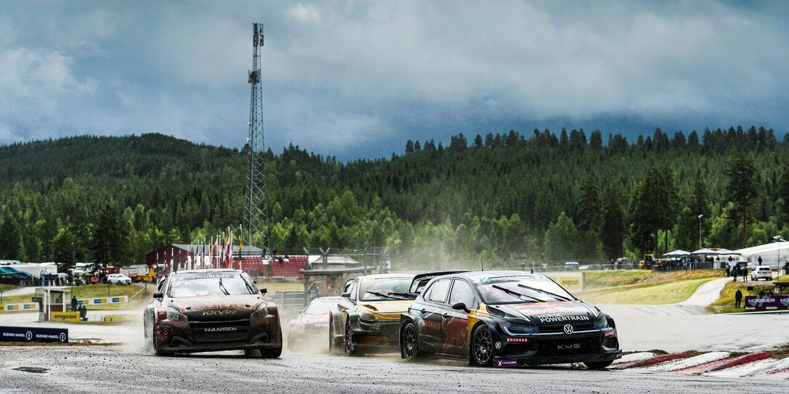
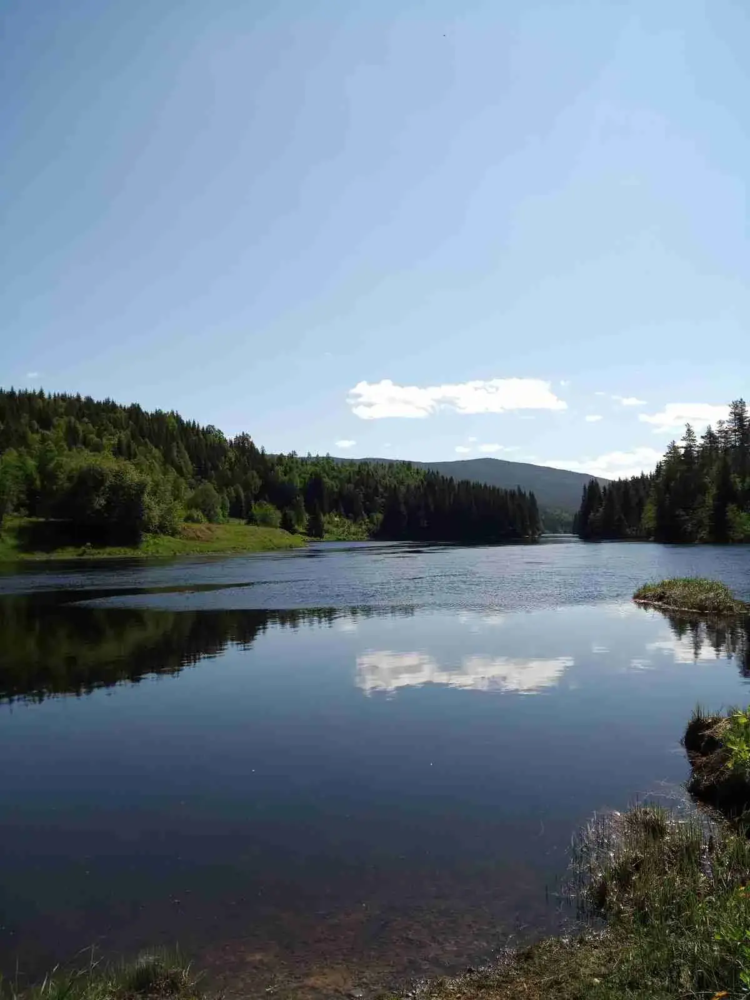

Höljesbanan, also known as Höljes Motorstadion, is a 1.210 km (0.752 mi) rallycross circuit situated in the village of Höljes, in the Finnskogen ('Finnwoods') of the Swedish county Värmland, beside the river Klarälven and close to the Norwegian border. The circuit opened in February 1976 and is one of the most famous rallycross circuits in the world. Traditionally held over the first weekend of July the venue plays host to the so-called 'Magic Weekend' of rallycross when it runs the Swedish round of the European and World Rallycross championships.
Höljes ligt in de prachtige Zweedse regio Värmland, midden in een landschap van uitgestrekte bossen, heldere meren en glooiende heuvels. Een heerlijke plek voor liefhebbers van rust en ongerepte natuur. rondom het dorpje Höljes vind je uitgestrekte groene bossen, kabbelende beekjes en prachtige meren. Je kunt er genieten van de stilte, de frisse boslucht en de bijzondere Zweedse natuur. Met een beetje geluk spot je elanden, reeën en allerlei vogels. Een schitterend stukje Zweden waar de natuur nog alle ruimte krijgt. Een bijzonder mooi natuurgebied vlak bij Höljes is ook Lövbergets naturreservat, met oude sparrenbossen, beekjes en moerassige natuur. Het ligt ongeveer 10 kilometer ten zuiden van Höljes.